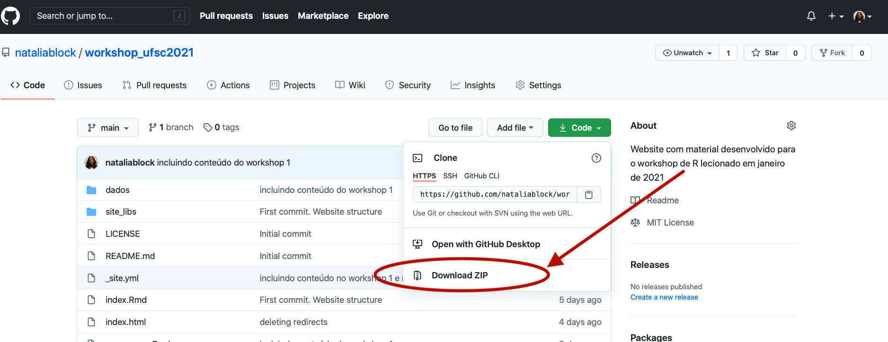

Para instalar a linguagem R você deve acessar o CRAN. Logo na página de início terá os links para a instalação para cada sistema operacional. É só baixar o do seu computador e realizar a instalação.
Você pode baixar o IDE RStudio neste link. Selecione a opção RStudio Desktop Free. O site irá detectar o seu sistema operacional, basta fazer o download e instalar.
Caso tenha alguma dúvida você encontra uma explicação mais sistemática da instalação para cada sistema operacional nesse link (em inglês).
Para uma explicação da instalação para Windows em português (talvez esteja um pouco defasada) veja este material.
Para mais detalhes sobre o R e o R Studio:
A melhor forma de reter o conteúdo em um curso de programação é digitar o código e escrever seus próprios comentários e explicações no script ao longo da aula. Neste workshop utilizaremos o método “live coding” em que digitarei o código “ao vivo” ao mesmo tempo em que o explico. Contudo, é possível que encontremos alguns desafios pelo fato de estarmos fazendo este workshop online e por termos tão pouco tempo. A seguir proponho formas para que você possa acompanhar este curso da maneira mais proveitosa possível:
Como expliquei, a melhor forma de fazer o curso é digitando o código e fazendo anotações ao longo da aula. Desta forma, o ideal é que você possa assitir o video do workshop em uma tela e interagir com o R em outra.
Caso não disponha de dois monitores (ou computadores) uma sugestão seria assitir os videos em um tablet ou no seu celular (talvez seja necessário dar um zoom na tela para enxergar os códigos) e trabalhar com o R no seu computador.
Outra possibilidade é fazer a divisão de sua tela em duas de forma a poder assitir o video de um lado e digitar o código no R do outro lado. Veja as instruções de como fazer isso no Windows aqui e no Mac aqui.
Caso nenhuma dessas soluções seja viável para você recomendo que assista o video da aula e posteriormente refaça todos os códigos segundo o roteiro do workshop disponível na aba “Workshops” deste site. O roteiro segue exatamente a ordem e as explicações do workshop, de forma que você pode prestar atenção apenas no video, caso não tenha como interagir com o R ao longo da aula, e testar os comandos disponíveis no roteiro sozinho em outro momento.
Teremos apenas um total de 8 horas para aprender uma boa introdução ao R. Você sairá desse workshop com os instrumentos básicos para limpar bases de dados e desenvolver gráficos por conta própria. No entanto, esse tempo é muito curto para aprender todos os fundamentos de R. Neste sentido, desenvolvi um workshop com base nos dados que vocês estão analisando na atual pesquisa do grupo, que lhes dará o conhecimento básico de como fazer no R o que vinha fazendo no Excel. Indicarei material complementar ao final do roteiro de cada workshop para quem quiser se aprofundar no tema por conta própria.
Ao aprender uma linguagem nova cometemos erros constantemente. Em linguagem de programação não é diferente. Mensagens de erro poderão ocorrer com frequência, e se você não conseguir entender qual foi o problema do seu código com rapidez é provável que “trave” em algum comando. Diferentemente de um workshop presencial, não poderei ver tela a tela para verificar o que aconteceu para que seu comando não “rodasse”. Como teremos apenas 2 horas para cada encontro, sugiro que siga as seguintes recomendações caso isso ocorra com você:
library() ou require() como veremos no workshop 1)Você terá muitas dúvidas ao longo do workshop e isso é ótimo! Caso suas dúvidas tenham a ver com comandos que não rodam peço que siga as recomendações que enumerei na seção anterior. De resto tentarei responder a todas no workshop. No entanto, lembre-se de que teremos apenas 2 horas para cada encontro. Caso sua dúvida seja conceitual provavelmente conseguirei responder prontamente. Se tiver dúvidas quanto a como desenvolver algo em R para além do que está no nosso roteiro, devo lhe responder dentro de uma destas três formas:
Sugiro a leitura do material do workshop anterior antes do seguinte para relembrar os conceitos e tirar dúvidas. É impressindível que realize as atividades propostas entre os workshops pois o material produzido na atividade será necessário para começar as atividades do workshop seguinte. Por exemplo: na atividade do workshop 1 você terá que fazer o upload no R dos bancos que serão utilizados no workshop 2. Caso não tenha realizado a atividade você ficará atrasado na aula e não conseguirá acompanhar as explicações desde o início.
Os dados trabalhados neste workshop e os scripts com as soluções das atividades estarão disponíveis no repositório do Github acessível no menu deste site. Os scripts com a solução das atividades estarão no repositório alguns minutos antes do workshop subsequente.
Os links no menu para repositório e para o dashboard, que será apresentado no primeiro workshop, abrem na mesma página. Para evitar sair do site é melhor abri-los em uma janela diferente.
Para ter acesso aos dados você precisará baixar toda a pasta do respositório e, uma vez o download tendo finalizado na sua máquina, basta copiar a pasta “dados” e colar no seu diretório de trabalho (você fará isso na atividade do workshop 1).
Para baixar a pasta vá até o repositório, clique no botão verde “Code” e selecione a opção “Download ZIP” (veja a imagem abaixo)

Angely Bernardo será nossa monitora neste curso. Caso tenha dificuldades para realizar as atividades entre um workshop e outro entre em contato com ela. Angely está generosamente nos dando esse apoio, mas também estará aprendendo R como vocês. Se houver outras dificuldades que ela não consiga solucionar resolveremos juntos. O canal de comunicação será decidido no primeiro workshop.
Este curso se baseia em diversos materiais disponíveis gratuitamente (e generosamente) na internet. Em grande medida me baseei no curso R for Social Scientists do Data Carpentry, no R Crash Course lecionado por Tiago Ventura na University of Maryland, College Park, e no livro R for Data Science de Hadley Wickham e Garrett Grolemund.
Dados de Exportação do estado de Santa Catarina. Comexstat, Ministério da Economia. Acesso em 11/01/2021
Dados de Importação do estado de Santa Catarina. Comexstat,Ministério da Economia. Acesso em 11/01/2021
Dados de Imigração. SISMIGRA; SINCRE, Ministério da Justiça e Segurança Pública. Acesso em 11/01/2021.